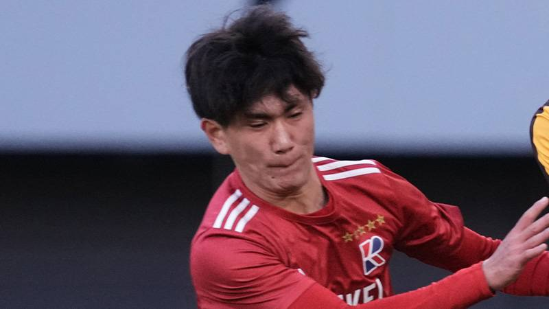

【柏の防波堤】幸田爽良

『引用：Football Tribe Japan,Getty Images
https://football-tribe.com/japan/2025/01/14/321775/』

1. 幸田爽良選手のプロフィール
■名前：幸田爽良（こうだそら）
■年齢：18歳（2025/02/03）
■生年月日：2006年 10月8日
■ポジション：DF
■所属：流通経済大学付属柏高等学校
幸田選手は現在（2025/02/03）18歳の高校3年生です。
流通経済大学付属柏高等学校に所属しており、第103回全国高校サッカー選手権大会に出場し、チームの準優勝にも貢献した選手です。
2. これまでの経歴は？
■小学生：とりで倶楽部ドリーム
■中学生：クラブ・ドラゴンズ柏
■高校生：流通経済大柏
幸田選手は、第103回全国高校サッカー選手権大会での活躍でご存じの方も多いと思いますが、選手権の千葉予選が終わる（11月ごろ）まではBチーム（プリンスリーグ関東2部）でプレーしていました。
Bチームでの活躍が評価され、11/23のプレミアリーグEAST第20節vs昌平高校（インターハイ王者）でスタメンとしてトップチームデビューを果たしました。
「最初のプレミアということで、自分も凄くドキドキしましたね。1,2年のころはまったくAチームに絡んだことがなかったのに、そこで初めて使ってもらって、本当に緊張しました。」
とコメントされていましたが、そんな緊張を感じさせない活躍で、3-0の完封勝利に貢献しました。
迎えた選手権では、vs佐賀東（2回戦）、vs大津（3回戦）、vs東海大相模（準決勝）で後半から投入されチームの勝利に貢献しました。
vs前橋育英（決勝）でも63分から出場しましたがPKで敗れ、準優勝となりました。
3. どんなプレースタイル？
幸田選手のプレースタイルを一言で表すとしたら、『防波堤』です。
守備の要として相手の攻撃を食い止め、的確なポジショニングと強靭な対人守備でチームに安定感をもたらします。
特に印象に残っているのは、プレス強度と間合いです。
以下は、第103回全国高校サッカー選手権大会、準決勝（vs東海大相模）でのプレーとなります。(幸田選手は13番です。)
①3:18~
サイドチェンジされることを素早く認識し、身体をマッチアップ相手に向ける。
ヘディングでは間に合わないため、相手のトラップを狙える距離まで詰める。
相手のトラップと同時に身体を入れ、対処する。
サイドバックの手本のようなプレーでした。
②14:20~
キーパーからロングボールが入ることを察知し、プレス準備。
トラップを狙える距離まで詰める。
ワンツーを警戒し、ボールではなく相手をブロック。
ファールを取られてもおかしくはない場面でしたが、ワンツーのケアとしてボールではなく相手をブロックするのは鉄則なので感心しました。
③15:12~
ボールロストから展開されることを認識し、プレス準備。
中に行かせないようにトラップを狙える距離まで詰める。
縦に仕掛けられるも斜めに侵入してきたタイミングで身体を当てる（身体を入れようとする）。
もう少し詰めれたらベストでしたが、東海大相模の13番（西田蓮選手、湘南ベルマーレWEST出身）の得意な縦突破に対して、後手に回ることのない反応速度とアジリティを見せてくれました。
身体を当てる（入れる）タイミングも良く、ここまでできればカバーする選手も有難いですね。
④28:35~
ボールロストの場面で、ボールとマーク相手を同一視野に入れながらキックモーションと同時にインターセプトを狙う。
インターセプトまではできなかったものの、激しいプレスで相手に自由を与えない。
とにかく守備センサーが鋭い選手です。
⑤29:42~
②と似ている場面。
ボールの軌道により出足が少し遅れ、相手にワンツーを仕掛けられる。
②のように先に相手をブロックすることはできなかったものの、スプリントと絶妙なタイミングのタックルで攻撃を阻止。
切り替えの速さに加え、スプリント能力が非常に高いですね。
⑥東海大相模戦以外のプレーがまとめられていました。
@hideyo40 #CapCut #高校サッカー #高校サッカー選手権 #高校サッカー選手権決勝 #103回 #流経大柏 #流通経済大柏 #幸田爽良 #前橋育英 #白井誠也 #大津高校 #soccer #13 #守備職人 #かっこいい #df #fyp #fypシ #おすすめ #おすすめにのりたい #運営さん大好き ♬ オリジナル楽曲 - EN9🇯🇵⚽ - 𝑬𝑵𝐈.えに
4. 気になる進路は？
幸田爽良選手の進路は、現在（2025/02/03）判明しておりません。
分かり次第掲載いたします。
また、進路情報などお持ちの方がいましたら、当サイトお問い合わせページにご連絡ください。
5. まとめ
- 幸田爽良選手は、流経柏のDFとして選手権準優勝に貢献しました。
- Bチームから這い上がってきたメンタリティも持っています。
- プレス強度と間合いが素晴らしい選手です。
- 進路は今のところ判明しておりません。
このサイトでは、チーム練習と個人練習の2つに分けて、厳選された練習メニューをまとめています。
悪い意味での「伝統的な練習」への疑問。ただボールを蹴るだけの自主練。敗れる理由もわからない無策のチーム。
そんな悩みを解決するためにこのサイトを作り上げました。
蹴練場は日本全国のサッカーファミリーを応援しています。